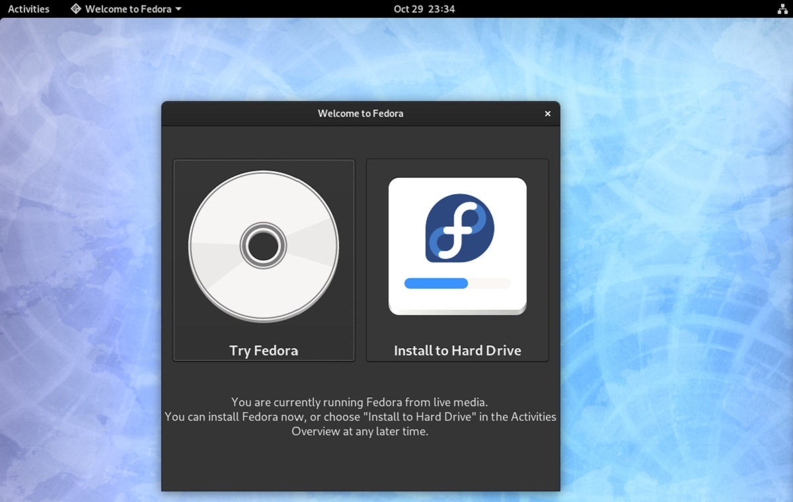
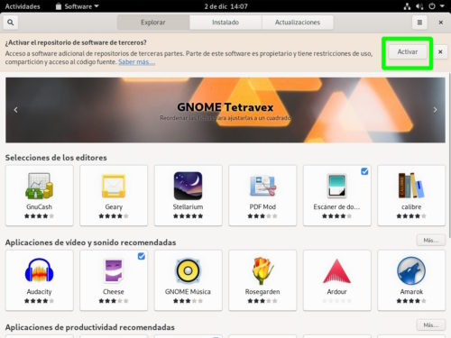
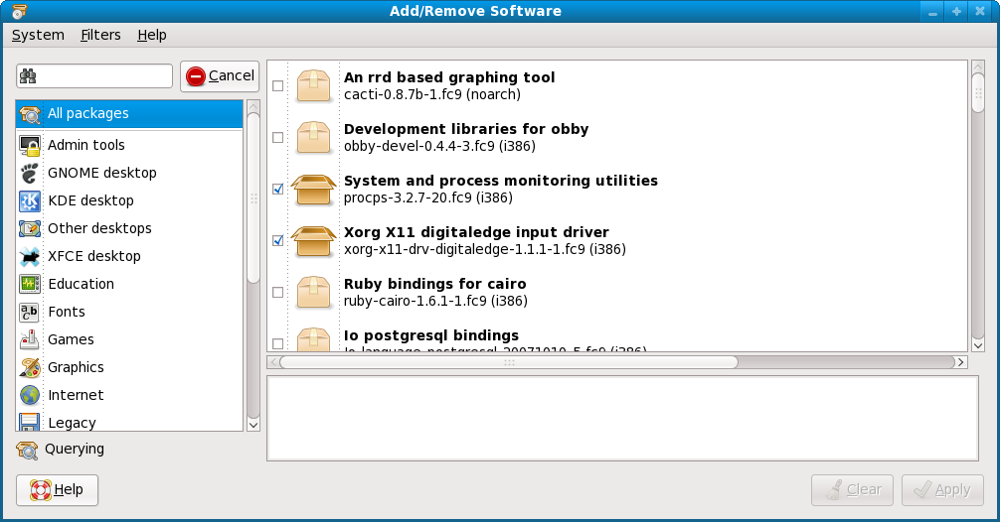

##Fedora es una distribución Linux para propósitos generales basada en RPM, que se caracteriza por ser un sistema estable,la cual es mantenida gracias a una comunidad internacional de ingenieros, diseñadores gráficos y usuarios que informan de fallos y prueban nuevas tecnologías. Cuenta con el respaldo y la promoción de ##Red Hat.
El proyecto no busca sólo incluir ##software libre gratuito y de código abierto, sino ser el líder en en el ambiente tecnologico. Algo que hay que destacar es que los desarrolladores de Fedora prefieren hacer cambios en las fuentes originales en lugar de aplicar los parches específicos en su distribución, de esta forma se asegura que las actualizaciones estén disponibles para todas las variantes de GNU/Linux. Max Spevack en una entrevista afirmó que: "Hablar de Fedora es hablar del rápido progreso del ##software libre y de codigo abierto." Durante sus primeras 6 versiones se llamó Fedora Core, debido a que solo incluía los paquetes más importantes del sistema operativo. La última versión es Fedora 16, puesta a disposición del público el 8 de noviembre del 2011.
De acuerdo a ##DistroWatch, #Fedora es la tercera distribución de GNU/Linux más popular, por detrás de ##Linux Minty ##Ubuntu.
El proyecto fedora se distribuye en muchas formas diferentes:
En las primeras 6 versiones había dos repositorios principales: El Fedora Core y el Fedora Extras. Fedora Core contenía todos los paquetes básicos que eran requeridos por el sistema operativo, así como otros que eran distribuidos con los CD o DVD de la instalación. Fedora Extras, el repositorio secundario que estaba incluido en Fedora Core 3 era mantenido por la comunidad y no estaba incluido en los discos de instalación. En ese entonces los repositorios eran:
| repositorio | descripcion |
|---|
SELinux ("Security-Enhanced Linux") se destaca entre las características de seguridad de Fedora , pues implementa una gran variedad de políticas de seguridad, incluyendo control de acceso obligatorio (MAC "Mandatory Access Control"), a través de los Módulos de Seguridad de Linux que están en el núcleo Linux del sistema.
La distribución está liderando las distribuciones que incorporan SELinux, habiéndolo introducido en Fedora Core 2. Sin embargo lo desactivó como elemento predeterminado, pues alteraba radicalmente la forma en que el sistema operativo funcionaba. Posteriormente fue activado por defecto en Fedora Core 3 introduciendo una política menos estricta. Fedora también tiene métodos propios para prevenir la sobrecarga del buffer y la utilización de rootkits. La verificación del buffer en tiempo de compilación, «Exec Shield» y restricciones en como la memoria del núcleo en /dev/mem puede ser accedida ayudan a prevenir esto.
| Tabla comparativa entre software libre y software propietario | ||||
|---|---|---|---|---|
| N° | software propietario | Software libre | ||
| Características | ||||
| 1 | codigo fuente cerrado | codigo fuente abierto | ||
| 2 | requiere licencia de pago | puede utilizarce,modificarce y distribuirse libremente | ||
| 3 | limitaciones para copiar o modificar | libertad para estudiar y adaptar el software | ||
| Ventajas | ||||
| 1 | soporte tecnico oficial del fabricante | comunidad activa que da soporte | ||
| 2 | interfaz pulida y facilidad de uso | flexibilidad y adaptabilidad | ||
| 3 | integracion con otros programas comerciales | costo cero o muy bajo | ||
| Desventajas | ||||
| 1 | Alto costo de licencia | puede requerir conocimiento tecnico | ||
| 2 | dependencia del proveedor | falta de compatibilidad con algunos formatos propietarios | ||
| 3 | no se puede modificar o distribuir | no siempre tiene soporte tecnico profesional | ||
| ejemplos | ||||
|
Clic sobre la imagen para más info. sobre Windows
|
Clic sobre la imagen para más info. sobre Linux | |||
| bibliografia | observaciones | |||
| la informacion fue investigada aca | 1 | el software libre fomenta el aprendizaje y la colaboracion , ya que permite estudiar y modificar el codigo | ||
| 2 | el sofware propietario sue ser preferido en entornos empresariales por su soporte tecnico y stabilidad | |||
| 3 | la eleccion entre uno u otro depende del uso que se le quiera dar a los recursos disponibles | |||